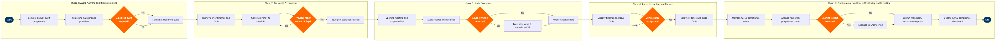

Quality Assurance & Safety Audits (CAMO)
Maintenance, Repair & Overhaul › Airworthiness & Compliance · 18 L4 steps · 5 phases · 4 decision gates · Updated 2026-10-01 20:51
📊
Process Flow Diagram (BPMN)

📋
L4 Process Steps
| Step | Step Name | Role / Swim Lane | System | Input | Output | KPI | Dec? | Exc? |
|---|---|---|---|---|---|---|---|---|
Phase 1 1.1 |
Compile CAMO annual audit programme | Quality Assurance Manager (CAMO) | AMOS by Swiss AviationSoftware | Regulatory calendar (EASA Part-CAMO / FAR Part 145), contracted MRO provider list, prior audit cycle dates | Approved annual audit schedule with provider assignments and due dates | 100% of Part-145 approved providers audited within 24-month cycle; schedule published ≥60 days before Q1 | N | N |
| 1.2 | Risk-score providers using performance data | Quality Assurance Analyst | Tableau / Power BI | Historical finding rates, open CAR age, repeat finding history, on-time delivery metrics from AMOS | Provider risk ranking matrix (High / Medium / Low) with scoring rationale | Risk model refresh completed ≤5 business days after each completed audit; High-risk providers flagged within 48 hours | N | N |
| 1.3 | Determine if expedited audit is required | Accountable Manager (CAMO) | AMOS by Swiss AviationSoftware | Provider risk score, occurrence reports filed against provider, regulatory authority safety bulletins | Audit priority decision: standard schedule maintained or expedited audit triggered | Expedited audit commenced within 10 business days of trigger event; 0 High-risk providers left unaudited >6 months | Y | Y |
Phase 2 2.1 |
Retrieve prior audit findings and open CARs | Quality Assurance Analyst | AMOS by Swiss AviationSoftware | Provider ID, audit history reference, open Corrective Action Request (CAR) log | Prior finding summary report with CAR status (open / overdue / closed) | CAR retrieval completed within 1 business day; zero open Level 1 CARs permitted before new audit commences | N | N |
| 2.2 | Generate compliance checklist from Part-145 requirements | Lead Auditor | AMOS by Swiss AviationSoftware | EASA Part-145 / FAR 145 regulatory requirements, airline-specific MOE (Maintenance Organisation Exposition), prior non-conformances | Structured audit checklist with regulatory reference codes and prior finding flags | Checklist covers 100% of applicable regulatory subparts; prior repeat-finding items tagged for enhanced scrutiny | N | N |
| 2.3 | Issue formal pre-audit notification to provider | Quality Assurance Manager (CAMO) | AMOS by Swiss AviationSoftware | Approved audit schedule, checklist scope, lead auditor assignment | Pre-audit notification letter with scope, dates, document request list transmitted to Part-145 provider | Notification issued ≥14 calendar days before audit start; document request acknowledgement received within 5 business days | N | N |
| 2.4 | Confirm provider readiness and document receipt | Lead Auditor | AMOS by Swiss AviationSoftware | Pre-audit document submission from provider (MOE, personnel licences, equipment calibration records, training records) | Readiness confirmation or audit postponement decision | 100% of requested documents received and reviewed before audit day 1; postponement rate <10% of scheduled audits | Y | Y |
Phase 3 3.1 |
Conduct opening meeting and confirm audit scope | Lead Auditor | AMOS by Swiss AviationSoftware | Audit checklist, attendee list (provider Accountable Manager, QA lead, production planning), pre-audit findings | Signed scope-confirmation record; audit log opened in AMOS | Opening meeting completed within 1 hour; scope agreed and documented before hangar/records access begins | N | N |
| 3.2 | Audit technical records for airworthiness compliance | Lead Auditor | CAMP by CAMP Systems International | Aircraft technical logbooks, Airworthiness Directive (AD) compliance records, component removal/installation logs, deferred defect register | Records audit worksheet with compliance status per AD/SB and identified discrepancies | AD compliance rate ≥99.5% across sampled aircraft tail numbers; zero unaddressed mandatory ADs permitted | N | Y |
| 3.3 | Inspect maintenance facilities, tooling, and personnel | Lead Auditor | AMOS by Swiss AviationSoftware | Tooling calibration register, Part-66 licence currency list, hangar environment records (FOD control logs, lighting/temperature) | Facilities inspection record with pass/fail status per checklist item | Tooling calibration current for ≥99% of items sampled; zero expired Part-66 licences on active maintenance staff | N | Y |
| 3.4 | Classify findings and identify Level 1 safety issues | Lead Auditor | AMOS by Swiss AviationSoftware | Completed audit checklist, records worksheet, facilities inspection record | Preliminary finding classification (Level 1 / Level 2 / Level 3) entered in AMOS | All findings classified within 4 hours of audit completion; Level 1 findings notified to Accountable Manager within 2 hours of identification | Y | Y |
| 3.5 | Issue stop-work notice or immediate CAR for Level 1 | Accountable Manager (CAMO) | AMOS by Swiss AviationSoftware | Level 1 finding record, regulatory authority contact details, affected aircraft tail numbers | Formal stop-work notice or immediate CAR issued; regulatory authority notified within 24 hours per EASA Part-CAMO M.B.902 | Regulatory authority notification within 24 hours of Level 1 finding; stop-work enforced within 2 hours on affected task | N | Y |
Phase 4 4.1 |
Finalise audit report and issue CARs to provider | Lead Auditor | AMOS by Swiss AviationSoftware | Classified finding list, provider Accountable Manager details, regulatory references per finding | Signed audit report and numbered CARs issued to provider within 5 business days of audit close | Audit report issued within 5 business days; CAR numbering 100% traceable to audit report section | N | N |
| 4.2 | Review and accept or reject provider CAP response | Quality Assurance Manager (CAMO) | AMOS by Swiss AviationSoftware | Provider Corrective Action Plan (CAP) with root-cause analysis, containment action, corrective action, preventive action, and target completion dates | CAP acceptance or rejection with specific deficiency comments returned to provider | CAP response received from provider within 10 business days (Level 1) / 30 days (Level 2); first-submission acceptance rate ≥75% | Y | N |
| 4.3 | Track CAP implementation and verify closure evidence | Quality Assurance Analyst | AMOS by Swiss AviationSoftware | Accepted CAP with milestone dates, provider evidence submissions (revised procedures, training records, calibration certificates) | CAR closure record with verified evidence reference; overdue CARs escalated to Accountable Manager | CAR on-time closure rate ≥90%; zero Level 1 CARs open beyond 30 days; Level 2 CARs closed within 90 days | N | Y |
Phase 5 5.1 |
Monitor fleet-wide AD and SB compliance status | Continuing Airworthiness Engineer | CAMP by CAMP Systems International | FAA/EASA AD feeds, Boeing Service Bulletin library, current aircraft maintenance status from AMOS | AD/SB compliance dashboard with next-due dates and overdue alerts by tail number | AD compliance rate ≥99.9% at fleet level; zero aircraft operated with overdue mandatory ADs; SB incorporation decisions documented within 30 days of issue | N | Y |
| 5.2 | Analyse reliability programme outputs for adverse trends | Reliability Engineer | Tableau / Power BI | PIREP/MAREP data from AMOS, component removal rates, in-flight shutdown rates, delay/cancellation codes, industry benchmark data (IATA MCTM) | Monthly reliability report with control chart trend analysis and alert flag list | Reliability report published by 5th working day of each month; alert threshold breach investigated within 10 business days; IFSD rate ≤0.02 per 1,000 engine hours | N | N |
| 5.3 | Submit mandatory occurrence reports to regulator | Safety Officer (CAMO) | ECCAIRS 2 (European Coordination Centre for Accident and Incident Reporting Systems) | Occurrence reports from maintenance crews, AMOS defect records, CAMO safety investigation findings | Mandatory occurrence report (MOR) submitted to EASA / national CAA within 72 hours per Regulation (EU) 376/2014; ASRS report filed for US operations | 100% of reportable occurrences submitted within 72-hour regulatory deadline; MOR rejection rate <2%; follow-up investigation reports submitted within 30 days | N | Y |
📋